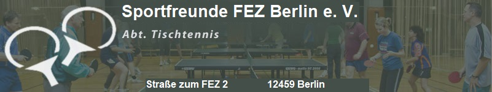

Willkommen auf der Webseite der Sportfreunde FEZ Berlin e.V.
Wir sind ein kleine Tischtennisgemeinschaft im Freizeit- und Erholungszentrum Berlin, zentral gelegen im Herzen der
Wuhlheide. Unsere gemeinsamen Trainingseinheiten finden jeden Dienstagabend in der Mehrzweckhalle statt, und kommen
ohne Trainer aus. Der Fokus liegt auf der ungezwungenen und freundschaftlichen Atmosphäre des gemeinsamen Tischtennisspiels.
Bitte beachten Sie, dass wir keine Kinder- oder Jugendabteilung haben.
Informationen zum Mitglieder-Beitrag (PDF)
Die aktuelle Jahresgebühr für Vereinsmitglieder (Vollzahler) beträgt 71,50 EUR.